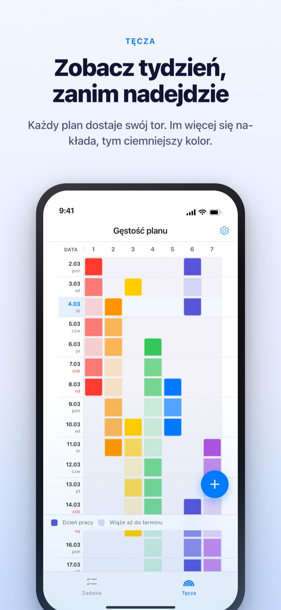
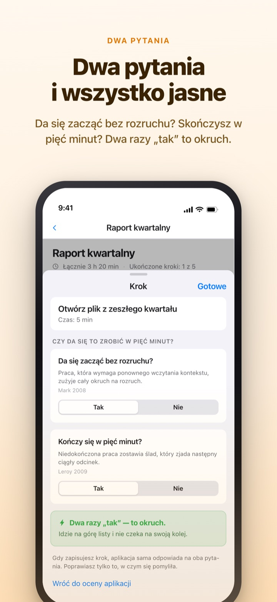
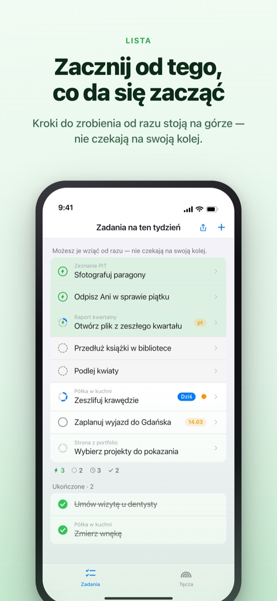
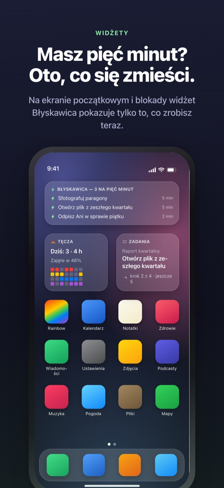

Zobacz ciężki tydzień z wyprzedzeniem.
Wykorzystaj wolne pięć minut.
Im bardziej zadania na siebie zachodzą, tym głębszy kolor tęczy. Podziel duże zadanie na kroki, a ten, który zrobisz w przerwie, już czeka na samej górze.
Tęcza, dzielenie zadań, timer i synchronizacja z Makiem są za darmo.

Sprawdź sam
„Raport za III kwartał” jest już podzielony na pięć kroków. Wybierz krok, zmień czas albo odwróć odpowiedź. Tylko krok z dwoma „tak” staje się okruchem do zrobienia w pięć minut.
Kalendarz wygląda pusto, a tydzień i tak odbiera oddech?
Kalendarz mówi, czy coś jest zaplanowane, a nie ile się na tym piętrzy. Że trzy terminy wypadają w tym samym tygodniu, odkrywasz zwykle dopiero w jego środku, a wolne pięć minut pomiędzy znika na przeglądaniu listy zadań. Rainbow of Desire rysuje tydzień jako siatkę, przyciemnia miejsca, gdzie sprawy się nakładają, i odkłada na bok kroki, które zmieszczą się w przerwie.
Dwa pytania i wszystko jasne
Gdy dzielisz duże zadanie, każdy krok dostaje dwa pytania. Da się zacząć bez rozruchu? Kończy się w pięć minut?
Tylko podwójne „tak” daje okruch. Aplikacja odpowiada pierwsza na podstawie czasu i słów, a ty odwracasz odpowiedź tylko wtedy, gdy jest błędna.

Chwila wolnego? Patrz na górę
Przesuń zadanie w prawo, żeby dać mu błyskawicę, a przeskoczy kolejkę i stanie na górze. Nie musisz czytać całej listy.
Czy kroki na siebie czekają, ustalasz raz dla grupy. Po kolei pokazuje pierwszy niezrobiony krok, Dowolnie pokazuje okruch, który możesz wziąć teraz.

Widać bez otwierania aplikacji
Timer odlicza do chwili, gdy kończy się wydarzenie, a pozostały czas widać też w Dynamic Island i na ekranie blokady.
Widżety na ekranie początkowym i blokady pokazują, czym się zajmujesz, co zmieści się w pięć minut i tęczę tego tygodnia. (Widżety są w Pro)

Start w trzech krokach
- 1
Wyznacz wydarzenie
Przytrzymaj puste pole w dniu początku i stuknij dzień końca. Na tęczy pojawi się linia.
- 2
Podziel duże zadania
Stuknij zadanie, wpisz kroki i wybierz czas. Na dwa pytania aplikacja odpowie pierwsza.
- 3
W przerwie patrz na górę
Okruchy i zadania z błyskawicą zbierają się na górze bez czekania w kolejce.
Co zobaczysz na ekranie
- Ciemne pole · jasne pole
- dni, w które naprawdę nad tym pracujesz, i reszta okresu do daty końca
- Pełny wiersz
- dzień, w którym dzieje się tyle naraz, że jedno opóźnienie przesuwa cały dzień
- Okruch
- „tak” na oba pytania; bierz, gdy masz pięć minut
- Krótki odcinek
- bez rozruchu, ale nie zmieści się w okruchu; robisz za jednym podejściem
- Ciągły odcinek
- wymaga rozruchu albo trwa 45 minut i dłużej; trafia do zarezerwowanego czasu
- Błyskawica
- twój własny znak „od razu”; wskakuje na górę
- Po kolei · Dowolnie
- czy kroki na siebie czekają, ustawiane raz dla grupy
- Rejestr odzyskanego czasu
- podsumowanie tygodnia: to, co zostało, odzyskany czas i odpoczynek, osobno i bez sumowania
Czas sumuje się od dołu: czas zadania to suma jego kroków.
To, czego potrzebujesz na dziś, jest za darmo
Za darmo
- Tęcza (siatka gęstości planu)
- Dzielenie zadań na kroki i dwa pytania
- Błyskawica i kolejność kroków
- Timer w Dynamic Island i na ekranie blokady
- Synchronizacja z Rainbow Craft na Macu przez iCloud
- Rejestr z ostatnich dwóch tygodni
Rainbow Plus · Rainbow Pro
- Plus: statystyki wydarzeń i rejestr starszy niż dwa tygodnie
- Pro: wszystko z Plus oraz widżety na ekranie początkowym i blokady
- Pro: import z Kalendarza i stałe wyświetlanie
- Pro: udostępnianie wydarzeń tylko do odczytu
- Pro: odblokowuje też Rainbow Craft Pro na Macu
Każdy jako subskrypcja roczna albo jednorazowy zakup na zawsze
Płacisz tylko za spojrzenie wstecz na minione tygodnie i za wynoszenie rzeczy poza aplikację. Jeśli kupiłeś Pro wcześniej albo masz jeszcze plan miesięczny, nadal masz Pro.
Częste pytania
Czy potrzebuję konta albo iCloud?
Jeśli korzystasz sam, nie. Nie ma rejestracji, wszystko zostaje na urządzeniu. Do innych urządzeń, aplikacji na Maca lub udostępniania zaloguj się do iCloud.
Aplikacja źle odpowiedziała na pytanie.
Stuknij krok i przełącz Tak lub Nie. Twoja odpowiedź zawsze ma pierwszeństwo. Stuknij „Wróć do oceny aplikacji”, żeby oddać jej decyzję. Krok bez czasu nie liczy się jako okruch, bo aplikacja nie wie, czy zmieści się w pięciu minutach.
Czy mogę coś komuś udostępnić?
Linkiem z zaproszeniem udostępnisz wydarzenia tylko do odczytu (Pro) albo otworzysz listę zadań, którą ty i zaproszone osoby czytacie i edytujecie razem. Dołączyć może każdy, kto ma link, więc wysyłaj go tylko właściwym osobom. Nie ma to związku z Chmurą rodzinną Apple.
Czy widać wydarzenia z Kalendarza?
Wydarzenia z wybranych kalendarzy pojawiają się na tęczy i w widoku dnia (Pro). Aplikacja tylko je czyta i niczego nie zapisuje.
Czy mogę odhaczać w widżecie?
Widżety służą tylko do podglądu. Stuknij widżet, a otworzy się lista zadań; odhacz tam.
Czy aplikację na Maca kupuje się osobno?
Rainbow Craft to osobna aplikacja na macOS w Mac App Store. Na tym samym koncie iCloud zadania i plany tygodnia synchronizują się same, bez opłat.
Czy moje starsze zadania zostały?
Tak. Zadania, kroki i ustawione czasy zostają. Etykiety dawnych warunków startu aplikacja ocenia na nowo dwoma pytaniami.
Gdzie są przechowywane moje dane?
Nie ma serwera. Wszystko jest na twoim urządzeniu i w twoim prywatnym iCloud, do którego twórca nie ma wglądu. Bez identyfikatora reklamowego i lokalizacji. Aplikacja wysyła tylko anonimowe statystyki użycia, które cię nie identyfikują i które można wyłączyć w Ustawieniach.
Jak anulować subskrypcję?
W Ustawieniach > Konto Apple > Subskrypcje. Odnawia się po tej samej cenie, jeśli nie anulujesz jej najpóźniej 24 godziny przed końcem okresu. Zakup na zawsze opłacasz raz.
Coś nie działa albo wygląda dziwnie? Napisz na leeo@kakao.com. W ustawieniach aplikacji też znajdziesz opcję kontaktu.